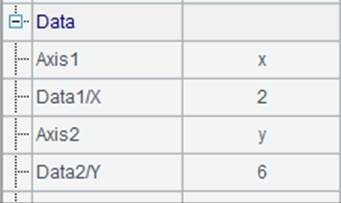
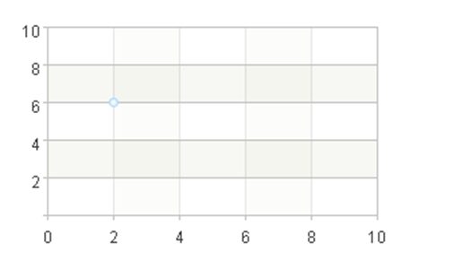
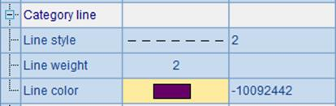
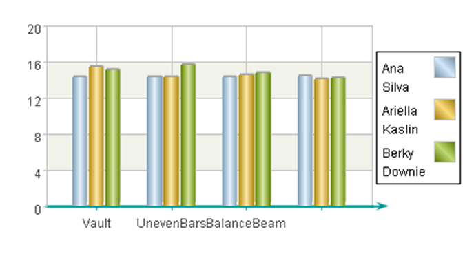
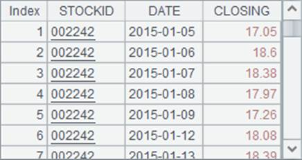
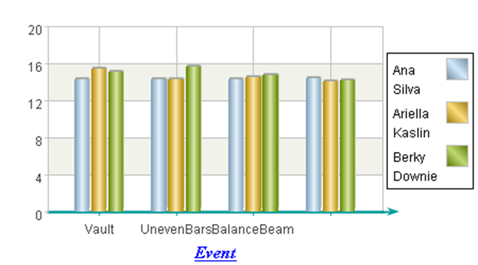

As can be seen from the chart above, the result of chart plotting with the sector element is sectors with fill colors. This means the appearance properties of the sector element will include fill color, border style, border weight and border color. By default, the fill color is automatically generated with lighting effects. Now modify A6¡¯s code into =A1.plot("Sector","borderWeight":1,"borderColor":-16724839,"fillColor":[["ChartColor",0,true,-52429,-13057,0],["ChartColor",0,true,-10066177,-3355393,0],["ChartColor",0,true,-13369345,-1,0]],"text":A2.(NAME),"axis1":"x","data1":A2.(NAME),"axis2":"y","data2":A2.(SCORE)). By doing so, the appearance properties will be changed as follows:

Set the color for border line as turquoise and the weight as 1, and specify a sequence of fill colors for the sectors. Thus the plotting result is:

As you can see, the appearance of the pie chart has changed. The default lighting effects of the fill colors have vanished and the gradient color has been applied to the entire circle area to achieve harmony among the fill colors.
And, the pie chart¡¯s data labels, different from those in other styles of charts, are presented by lines drew from the center of each sector. So you need to specify the appearance properties for these leader lines as well, besides those for data label texts. Modify the sector element¡¯s chart properties by editing A6¡¯s code:

Then the plotting result is:

Now let¡¯s see the text properties. The above plotting algorithm sets the data labels as names of the athletes. Modify A6 to change the chart properties of the sector element:

Here the text font, text style, text size and text color for the data label texts are modified, and the plotting result is:

It can be seen that the text properties apply in both the texts on the pie and those using leader lines.